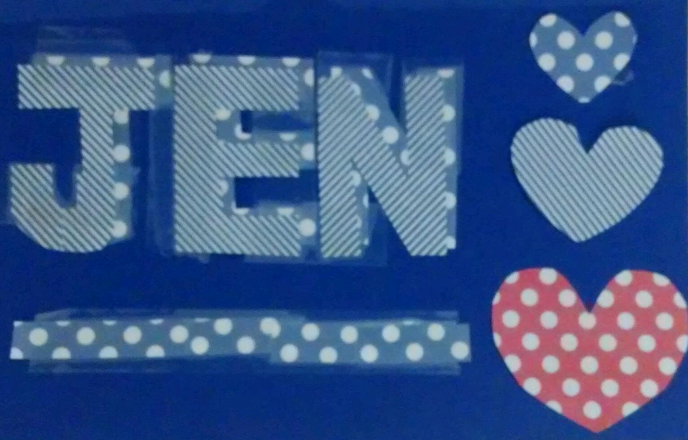
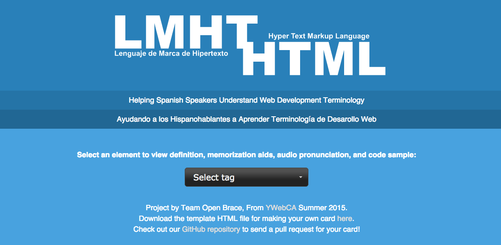
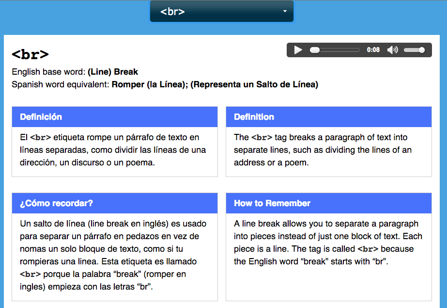
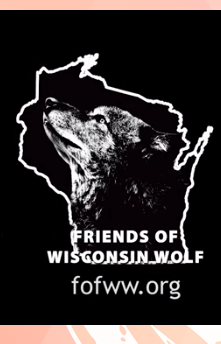

YWeb Career Academy Coursework and Sample Projects
My Code School Coursework/Badges
Ruby on Rails Workshop: Practice App
Deliverables and Design Projects
My Pinterest board for: "Teach the Class Something: Yes, You Can Draw"
My Class Wiki Article for: "Teach the Class Something: Yes, You Can Draw"
My CSS Code for Selectors Project: Rainbow Flag
Assignment: in 10 minutes, create something (with
paper and tape) that incorporates design principles:

Wireframes:

Group Capstone Project for YWebCA (Open Source Website)
Open source website designed to help Spanish Speakers learn technology terminology
 
Projects with Friends of the Wisconsin Wolf (FOFWW)
Co-Founded the Organization with Melissa Smith (PhD)

Assisted with production of professional documentary on the Wisconsin Wolf Hunt
Helped organize the first-annual Midwest Wildlife Conservation and Coexistence Conference
2015 Midwest Wildlife Conservation and Coexistence Conference on Facebook
2015 Wildlife Conference speakers on FOFWW Youtube Channel
Projects with Rainforest Biodiversity Group (RBG)
Rainforest Biodiversity Group (RBG)was originally named "Friends of the Great Green Macaw." Our board of directors voted to change name to Rainforest Biodiversity Group to include more species and diversity. We kept the endangerered great green macaw as an umbrella species.
Board member and consultant
- On Board of Directors for Rainforest Biodiversity Group and Costa Rican Bird Route
- Consultant for the Costa Rican Bird Route (CRBR), a system of newly created private preserves. The CRBR is the primary project of Rainforest Biodiversity Group.
- Original website design, maintenence and updates
- Social media liason (Facebook) Logo design, graphic arts, marketing materials and many other projects.
Rainforest Biodiversity Group on Facebook
The Costa Rican Bird Route has received national attention:
Washington Post Article about our CRBR project: "A Trip Along the Costa Rican Bird Route"
New York Times article about our CRBR project: The 31 Places to Go in 2010 (#15 is our project)